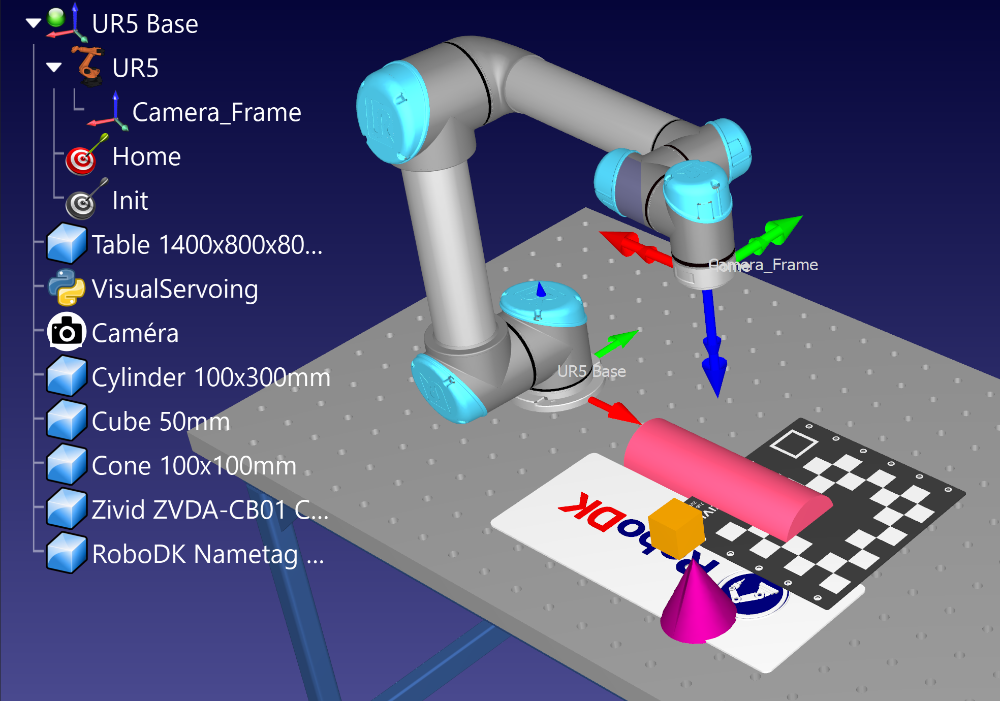
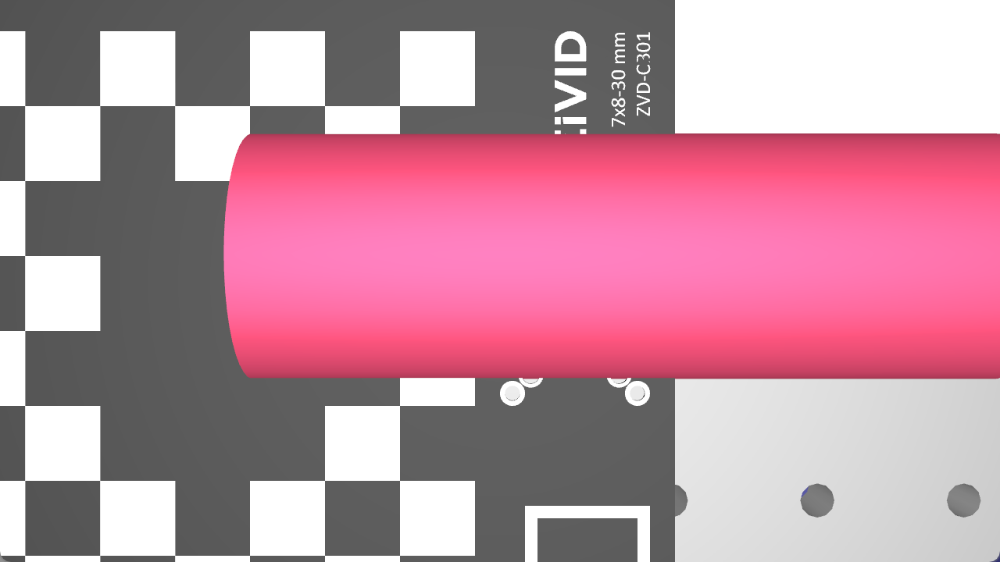
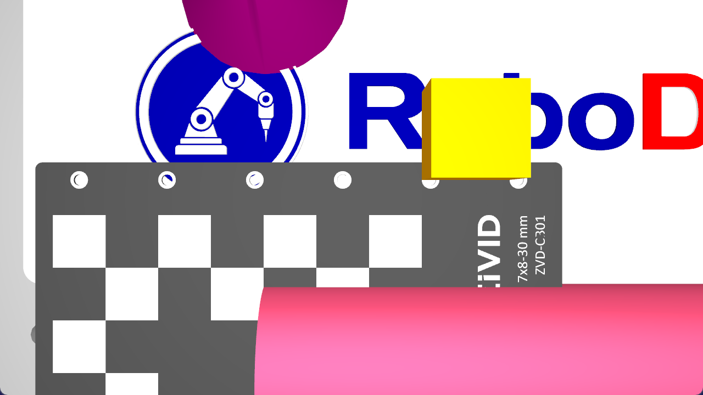
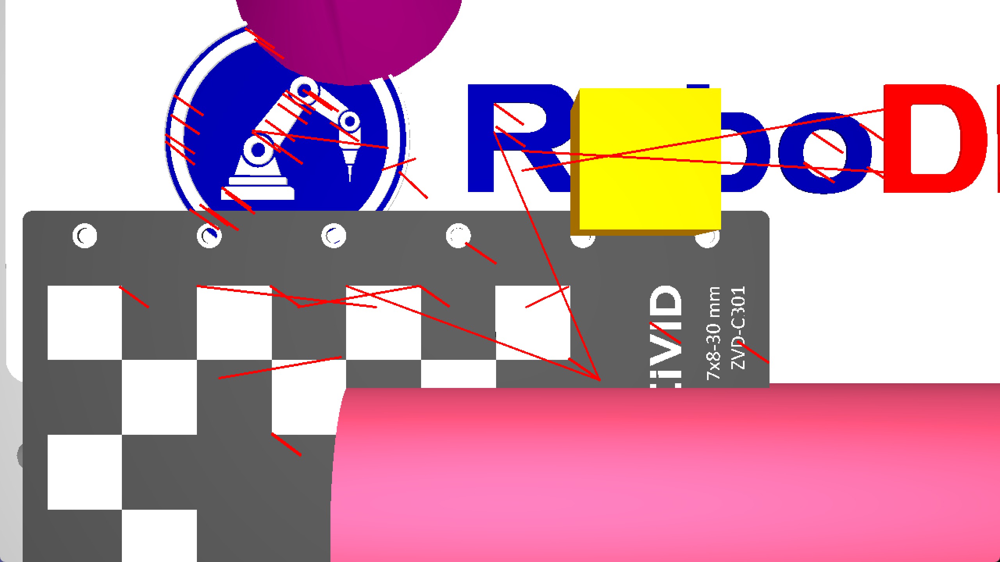

Asservissement visuel
Compétences
- Utilisation de RoboDK pour la simulation de robots, de cameras et de leurs environnements.
- Programmation Python avec l’API RoboDK et la bibliothèque OpenCV pour le traitement d’images.
- Acquisition des bases de l’asservissement visuel.
- Lecture d’articles de recherches en anglais.
Sujet
L’objectif du cours est d’implémenter, grâce au logiciel RoboDK et de son API Python, un algorithme d’asservissement visuel permettant de piloter un robot six axes equipé d’une caméra. L’algorithme devra prendre en entrée l’image courante renvoyée par la caméra et une image référence. L’algorithme devra permettre au robot d’atteindre une position qui annule la différence entre l’image courante et l’image cible.
La première étape du projet est d’implémenter un environnement sous RoboDK, contenant un robot six axes, une table, une caméra attachée au robot et des objets à filmer, afin de tester confortablement l’algorithme d’asservissement visuel. Ci-dessous un exemple d’environnement RoboDK à implémenter afin de tester l’algorithme d’asservissement visuel :

L’algorithme d’asservissement visuel se basera sur l’extraction de features dans l’image courante et l’image cible. A gauche, un exemple d’image prise par la caméra en position initiale, à droite, un exemple d’image prise par la cameré dans la position cible :
 
En comparent les informations extraites, on peut calculer une vitesse pour la caméra. La figure suivante est une capture de l’image courante de la camera prise pendant l’execution de l’algorithme, les lignes rouges représentent l’erreur entre les features extraites de l’image courante et les features extraites dans l’image cible :

Etapes
- Prise en main de RoboDK : création d’un environnement avec un robot six axes, une camera fixée au niveau de l’effecteur du robot, une table et des objects divers sur la table.
- Prise en main de l’API Python de RoboDK : implémentation d’un code Python permettant de déplacer le robot.
- Intégation d’OpenCV : lire l’image courante de la caméra et une image cible.
- Détection et mathcing de features : détection de features dans l’image courante et l’image cible grâce à OpenCV, matching pour la correspondance des features.
- Calcul de la loi de commande : adaptation de l’algorithme proposé dans l’article “Visual servo control, Part I: Basic approaches” dans l’API Python
Ressources
- Visual servo control, Part I: Basic approaches
- RoboDK API Examples
- Guide des stages
- Cours de Robotique de Jacques Gangloff
- Livre : Robotics
Livrables
-
Fichiers utilisés pour le développement :
- Projet RoboDK (.rdk)
- Image Cible (.jpg/.png)
-
Rapport :
- Page de garde
- Table des matières
- Table des figures
- Introduction : contexte, présentation du sujet, plan du rapport
- Corps : objectifs détaillés, outils utilisés, méthodologies, travail réalisés, explications des éléments techniques et scientifiques, moyens mis à disposition, difficultés rencontrées et solutions
- Conclusion : résumé du corps, commentaire sur le résultats, comparaison avec les objectifs fixés, perspectives et potentiel travaux futurs.
- References : ressources (universitaires, librairies, tutoriels, cours, etc.) utilisés dans le projet.
- Annexes : documentation pertinente mais non indispensable à la lecture du rapport (documentation technique trop lourde, developpement mathématique, etc.)